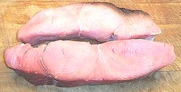

Sharks are very different from other fish. When the modern fish (teleosts - bony fish) came on the scene, they rapidly pushed their predecessors toward extinction. Under severe stress some of these older fish back evolved features of their own primitive ancestors while adding some very advanced features as well. So successful were these adaptions the following era is called "The Age of Sharks" and modern fish had to struggle to survive. Photo © i0089 .
Sharks have much larger brains than modern fish and a much more complex social structure, not dissimilar to mammals. They are even observed to have play behavior, something not seen outside of mammals and birds (so we suspect it might have been present in other dinosaurs). Sharks generally give live birth instead of laying eggs and some are at least partially warm blooded and very energetic. They have no bones, but a skeleton of light weight cartilage, allowing them to grow very large and still float. They can rise and sink through the water column quickly, as they have no swim bladder. Actually sharks don't swim like fish, they fly through the water like our nuclear submarines, and will sink if they stop moving. Their scales are formed like teeth rather than the removable flakes on modern fish (thus shark is not kosher).
Many sharks are now IUCN Red Listed as VU (Vulnerable) due to slow birth rates and Chinese demand for shark fins. Finning sharks is illegal in US waters and posession of shark fins or shark fin products is now illegal in California, Hawaii, and New York, states with the largest Chinese communities.
More on Varieties of Fish (very
large page).
There are many small sharks called "Dogfish", but the Spiny Dogfish has
always been the most common and perhaps the most common of all sharks. It
inhabits cooler waters worldwide, except the North Pacific, where the
very similar S. suckleyi replaces it. This fish can grow to a
little over 5 feet long and 20 pounds but it is commonly a little over 3
feet. This fish is IUCN Red Listed as VU (Vulnerable) worldwide, and CR
(Critically Endangered) in Northern Europe, where effective controls are
late being implemented.
Details and Cooking
Photo by U.S. National Oceanic and Atmospheric
Administration = Public Domain.
Common Thresher is found in temperate and tropical waters worldwide and can grow to nearly 25 feet and over 760 pounds. It is a warm blooded shark, thus very energetic, and that tail is used to herd and stun prey. Thresher is fished commercially and commonly sold as frozen shark steaks. There was a major fishery in California in the 1980s but populations collapsed within a decade from overfishing. Now under strict fisheries regulation the populations are recovering, but most thresher is now caught as bycatch from other fishery operations. Due to the California experience, all three Thresher sharks are now IUCN Red Listed as VU (vulnerable). Photo by U.S. National Oceanic and Atmospheric Administration = public domain.
Big Eye Thresher and Pelagic Thresher are tropical and subtropical
fish and not warm blooded. The Big Eye, a night hunter, is found worldwide,
while the Pelagic is an Indo Pacific fish absent from the Atlantic. Both
are caught primarily as bycatch from other fishery operations.
This is one of a very few sharks where the eating can go the wrong way.
Great whites don't consider humans particularly edible, but in the surf
or murky waters they can mistake a person for something tastier. They
live in temperate and tropical waters worldwide and can grow to nearly
26 feet and nearly 7500 pounds. This is quite large, but dwarfed by the
extinct C. megalodon which grew up to 55 feet and over 121,000
pounds (it ate mostly whales). How closely the Great White and Megalodon
are related is currently subject to fierce scientific debate. Great
White Sharks can be used for human consumption just like any other shark
- their fins are in demand in China, their livers by the supplement
industry and their hides by fashion houses. IUCN Red Listed as VU
(vulnerable).
Photo by Terry Goss distributed under license
Creative Commons
Attribution-ShareAlike 3.0 Unported.
Blue Sharks have the widest range of any animal, inhabiting all oceanic
waters between the arctic circles. They can grow to 13 feet and 450
pounds. This is the most widely caught shark in commercial fisheries,
usually as bycatch in other fisheries, and a major source of shark fins.
They are known to occasionally attack humans, probably mostly by mistake.
IUCN Red Listed as NT (near threatened).
Photo by U.S. National Oceanic and Atmospheric
Administration = public domain.
This is one of the most dangerous sharks. While a Great White may bite
and say "Yuk!", a tiger shark is more likely to actually eat a human,
because they eat just about anything, including things that are not
edible. This shark inhabits warmer waters worldwide, staying pretty
close to shore, and may even be found in river estuaries. Growing to
nearly 25 feet and 1780 pounds, Tiger Shark is fished commercially for
its fins, meat, hide, cartilage and liver. IUCN Red Listed as NT (near
threatened).
Photo by Albert Kok distributed under license Creative Commons
Attribution-ShareAlike 3.0 Unported.

Shark does not cook at all like other fish. Modern bony fish cook so
quickly and flake apart because they have very little of the connective
tissue land animals have. Shark has connective tissue, distributed
differently from land animals, but connective tissue it is. Shark stays
firm when cooked, so firm you may need a knife to slice it. The texture
is more like pork than like fish, and the flavor somewhere between pork
and fish. The steaks shown in the photo are from thresher shark.
Being bitten by a shark can be hazardous to your health, and may result in disability or even death. For this reason, exposure to large live sharks, particularly in murky or turbulent water, should be limited to the extent practical. Most sharks, including Great Whites, don't much like the taste of people and usually bite by accident, but the tropical Tiger Shark is much more dangerous, as it will (and does) eat anything, including things that are not edible. Photo © i0090 .
Sharks, being top predators, tend to have a higher mercury content than prey fish. This is considered a danger mainly to the fetuses of pregnant women, though the FDA admits their recommended limits are a shot in the dark without substantial relevant scientific data. The only substantial data I know of is the Seychelles Study (1) where no effect on child development was found in a population that eats 10 times as much fish as Americans do. There may also an issue with high concentrations of the neurotoxin BMAA, found in shark fins, and which may contribute to Dementia.
Shark liver oil from cold water sharks has long been harvested for dietary supplements and has long been a primary source of vitamins A and D. It is also a source for alkylglycerols (also found in mother's milk and bone marrow), pristane, squalene, omega-3 fatty acids, triglycerides, glycerol ethers, and fatty alcohols. Studies of possible anti-cancer benefits are under way, but nothing conclusive so far.
Shark cartilage has been claimed to fight cancerous tumors by slowing the growth of new blood vessels needed to supply the tumor. Most studies on this have been informal and inconclusive. Better studies are under way but most have so far shown no benefit. One study reported that a liquid extract had a positive effect but solid forms did not.